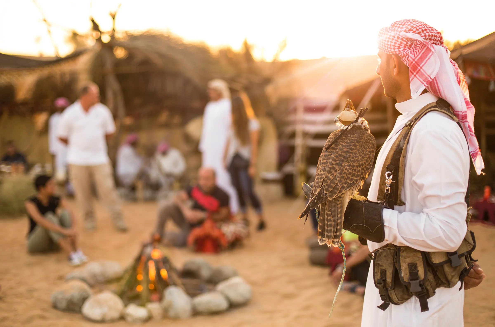
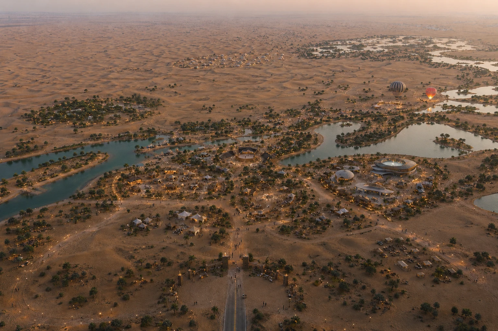

This pitch is best experienced in landscape mode.
Interactive DeckEnter full-screen presentation mode for the best experience.
A five day celebration of heritage, wonder, and the spirit of the UAE.
Horizons of Al Marmoom Festival is a five day celebration of heritage, wonder, and the spirit of the UAE — created to honour the traditions that shaped the nation while embracing the innovation and vision that continue to define its future.
Through immersive experiences rooted in culture, conservation, exploration, and community, the festival invites guests to reconnect with the landscape, stories, and shared spirit of the Emirates.

Every experience at Horizons is built around six pillars that shape the festival's identity. Hover or tap any pillar to see the experiences it inspires.
Celebrating Emirati traditions, storytelling, craftsmanship, and culture.
Heritage Camp Dining · Falconry Displays · Saluki Demonstrations · Camel Showcases · Traditional Storytelling · Heritage Auto Exhibition
Creating emotionally immersive moments through desert experiences, skies, light, astronomy, and performance.
Glow Show & Lake Projection Spectacle · Tethered Balloon Experiences · Astronomy Under the Desert Skies · Projection Mapping · Live Performances
Encouraging discovery through nature, learning, adventure, and shared experiences.
Heritage Drives in Vintage Land Rovers · Sunrise Balloon Flights · Guided Night Walks · Conservation Experiences · Interactive Discovery Activities
Showcasing the UAE's future vision through creativity, technology, youth, and forward thinking experiences.
Future Horizons District · Museum of the Future Collaborations · Student Innovation Exhibitions · STEM Activations · Sustainability Showcases
Honouring the desert environment through responsible tourism and cultural preservation.
Conservation Oasis · Sustainability Workshops · Wildlife Education · Nature Walks · Environmental Awareness Programmes
Bringing together families, schools, artists, businesses, residents, and visitors.
School Art Competitions · Community Initiatives · Blood Donation Campaigns · Volunteer Programmes · Local Artisan Markets
The festival unfolds along four interwoven journey themes — each a different way to experience Al Marmoom.
Experiencing glow shows, astronomy, projections, tethered balloon flights, and unforgettable evenings beneath the desert sky.
Celebrating the traditions, stories, performances, and hospitality that shaped the UAE — Bedouin dining, falconry, camel showcases, and overnight camping under the stars.
Exploration through heritage drives, cultural experiences, conservation activities, and immersive discovery across the Al Marmoom landscape.
Exploring innovation, creativity, sustainability, and the future vision of the Emirates — alongside the social heart of the festival in the Souq.
Eleven districts spread across Al Marmoom — from the arrival gateway to the camping under the stars. Click a pin to explore.

A large scale immersive glow and projection experience across the lake, celebrating the spirit and story of the UAE through light, projection, and artistic storytelling.
Elevated hot air balloon experiences overlooking the festival and desert landscape — a perspective that lifts the guest above the night spectacle and over the lake.
Premium sunrise flight experiences — exclusive journeys offering breathtaking views of Al Marmoom and the surrounding desert as the sky turns gold.
Guided stargazing experiences and astronomy talks beneath the desert night sky — connecting guests to the wonder of the cosmos far from the city's light.
An authentic Bedouin inspired dining experience celebrating hospitality, storytelling, music, and tradition — the cultural heart of the festival.
Live heritage showcases — falconry displays, saluki demonstrations, camel showcases, cultural performances, and keynote speakers throughout the day.
A destination experience — family camping, premium glamping, storytelling, astronomy, and desert hospitality under a sky full of stars.
Guided heritage style desert drives inspired by the exploration traditions of the region — vintage Land Rovers tracing the routes that shaped Emirati exploration.
A showcase of vehicles older than the founding of the UAE itself — celebrating the spirit of exploration and the storied heritage of the region's motoring history.
Interactive exhibits and experiences exploring innovation, sustainability, creativity, and the future of the UAE — connecting heritage to the nation's bold next chapter.
A vibrant celebration of food, craftsmanship, local businesses, and cultural exchange — the social heart of the festival, alive day and night.
Five qualities that set Horizons of Al Marmoom apart from every other National Day experience in the UAE.
Inspired by the principles of responsible tourism and environmental stewardship.
Celebrating the traditions, stories, landscapes, and hospitality that define the UAE.
Bringing together families, youth, residents, visitors, and communities through shared experiences.
Connecting the nation's rich history with its ambitious future vision.
Transforming Al Marmoom into a multi day cultural, educational, and entertainment destination.
Eight audience profiles — each unlocking a different set of partners. Tap an audience to see who reaches them best.
Celebrate National Day and enjoy quality time together — multi-generational programming with cultural depth.
Experience a unique celebration of UAE culture and community — a hometown festival worth recommending.
Discover an authentic and immersive UAE experience — the destination festival that defines a trip to Dubai.
Participate in educational and cultural learning opportunities — a curriculum-aligned outdoor classroom.
Connect with nature and experience the desert in a unique way — premium overnight programming for the most adventurous guests.
Explore Emirati traditions, arts, and storytelling — programming designed for guests who come for depth, not just spectacle.
Access premium experiences and networking opportunities — private hospitality across every major anchor experience.
Team engagement and client entertainment — bookable private hospitality across the festival's premium experiences.
For more than two decades, Hero Experiences Group has pioneered immersive desert experiences rooted in conservation, culture, and storytelling. Through award-winning tourism experiences, heritage preservation initiatives, large-scale event delivery, and a commitment to meaningful guest experiences, Hero is uniquely positioned to bring Horizons of Al Marmoom Festival to life.
"Hero is uniquely positioned to bring Horizons of Al Marmoom Festival to life."